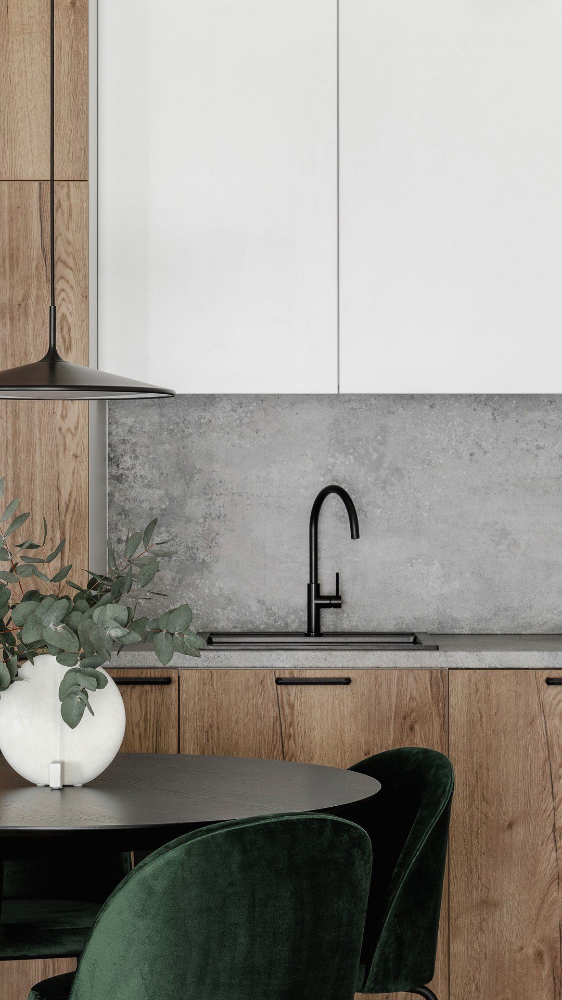

HADRIANUS
MULTISERVICE
Le notti di Roma
non valgono tutte uguale.
23-25 ottobreMaker Faire Rome — Gazometro
1-24 novembreRoma Jazz Festival, 50ª edizione
1° novembreCade di domenica: weekend lungo
7-8 dicembreL'8 cade di martedì: ponte pieno
Le date dell'autunno che portano gente a Roma,
in chiaro. Le teniamo noi.
Scrivi CALCOLO in DM
Salva questo post